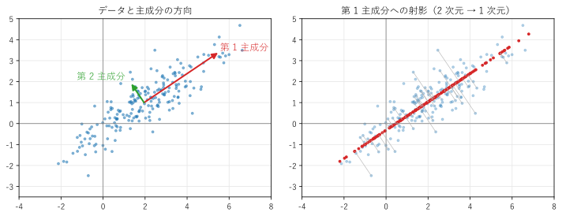
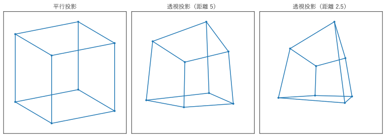

第 14 章 応用
この章では、これまでの内容を組み合わせた 3 つの応用例を示す。主成分分析は対称行列の固有値分解（第 11 章）と特異値分解（第 12 章）、PageRank はマルコフ連鎖と固有ベクトル（第 10 章）、3D グラフィックスの座標変換は同次座標と行列の積（第 4 章）の応用である。
主成分分析
多くの変数を持つデータは、変数の間に相関があることが多い。例えば、人の身長と体重、部品の寸法の測定値どうしなどである。相関があると、データは空間の中で一部の方向に偏って分布する。データが最も大きく広がる方向を順に求め、少ない方向でデータを要約する方法を主成分分析（principal component analysis、PCA）という。
\(d\) 個の変数を持つ \(N\) 個のデータを、\(N \times d\) 行列 \(X\) に並べる（各行が 1 つのデータ）。各変数の平均を引いた（中心化した）行列を \(X_c\) とすると、データの共分散行列は
である。\(C\) の対角成分は各変数の分散、非対角成分は 2 つの変数の共分散である。
データを単位ベクトル \(\bm{w}\) の方向に正射影したときの座標は \(X_c \bm{w}\) であり、その分散は
という二次形式になる。\(\|\bm{w}\| = 1\) の条件のもとでこれを最大にする \(\bm{w}\) は、\(C\) の最大の固有値に対する固有ベクトルであり、最大値はその固有値である（\(C\) は対称行列なので、第 11 章の主軸の座標で \(\bm{w}^\top C \bm{w} = \sum \lambda_i y_i^2\) と書くと、\(\sum y_i^2 = 1\) のもとで最大になるのは \(\lambda_1\) の方向だけに重みを置いたときである）。
この方向を第 1 主成分という。第 1 主成分と直交する方向のうち、分散が最大の方向が第 2 主成分であり、2 番目に大きい固有値の固有ベクトルである。以下同様に、共分散行列の固有ベクトルが主成分の方向、固有値がその方向の分散になる。全体の分散（固有値の和）に対する各固有値の割合を寄与率という。
図 21 は、相関のある 2 次元の架空のデータ（200 点）に主成分分析を行った結果である。

図 21 データと主成分の方向（左）、第 1 主成分への射影（右）。矢印の長さは標準偏差の 2 倍
28def pca(data: Matrix) -> tuple[Matrix, Matrix, Matrix]:
29 """平均、固有値（大きい順）、固有ベクトル（列、同じ順）を返す."""
30 mean = data.mean(axis=0)
31 centered = data - mean
32 cov = centered.T @ centered / (len(data) - 1) # 共分散行列
33 values, vectors = np.linalg.eigh(cov)
34 order = np.argsort(values)[::-1] # 大きい順に並べ替える
35 values, vectors = values[order], vectors[:, order]
36 # 固有ベクトルの符号は任意なので、各列の絶対値が最大の成分が正になるようにそろえる
37 signs = np.sign(vectors[np.argmax(np.abs(vectors), axis=0), np.arange(vectors.shape[1])])
38 return mean, values, vectors * signs
平均 = [1.9523 1.0002]
共分散行列 =
[[3.1834 1.9531]
[1.9531 1.6095]]
固有値（主成分の分散）= [4.502 0.2908]
寄与率 = [0.9393 0.0607]
主成分の方向（列）=
[[ 0.8288 -0.5596]
[ 0.5596 0.8288]]
特異値の 2 乗 / (n - 1) = [4.502 0.2908]
第 1 主成分の寄与率は約 94% である。つまり、右の図のように、各データを第 1 主成分の直線に射影して 1 つの数（主成分の座標）で表しても、データのばらつきの 94% を保てる。これが次元削減である。\(d\) が数百や数千の高次元のデータ（画像、遺伝子の発現量、センサーの多数の測定値など）でも、少数の主成分でデータの大部分を表せることが多く、可視化、雑音の除去、機械学習の前処理に使われる。主成分分析の詳細は、文献 [Jolliffe2002] を参照してほしい。
中心化したデータ行列 \(X_c\) を特異値分解 \(X_c = U\Sigma V^\top\) すると、\(C = V \Sigma^2 V^\top / (N - 1)\) なので、右特異ベクトルが主成分の方向、特異値の 2 乗を \(N - 1\) で割ったものが固有値になる。実行結果の最後の行で、これを確かめている。共分散行列を作ると条件数が 2 乗になるので（第 9 章の正規方程式と同じ理由）、実用のライブラリ（scikit-learn など）は特異値分解で主成分分析を行う。第 1 主成分から第 \(k\) 主成分までで再構成したデータは、\(X_c\) のランク \(k\) の低ランク近似（第 12 章）にほかならない。
サンプルの全体：ch14_pca.py
PageRank
検索エンジンは、検索語を含むページの中から、重要なページを上位に表示したい。Google の創業者が考案したPageRankは、「重要なページからリンクされているページは重要である」という考え方で、ページの重要度をリンクの構造だけから計算する [Brin1998]。
この考え方は、ランダムにリンクをたどるネットサーファーで表せる。サーファーは、今いるページのリンクから 1 つを等確率で選んで移動する。これはマルコフ連鎖（第 10 章）であり、長い時間の後に各ページにいる確率（定常分布）を、ページの重要度とする。
図 22 の 5 つのページのリンク構造で計算してみる。
図 22 ページ A から E のリンク構造
ページ \(j\) からページ \(i\) へのリンクがあるとき、\((i, j)\) 成分を「ページ \(j\) のリンクの数分の 1」とした推移行列 \(M\) を作る。例えば、A は B と C にリンクしているので、1 列目は B と C の成分が 1/2 である。
このままでは、どこからもリンクされていないページ（この例の E）の確率が 0 になり、またリンクの構造によっては、確率が一部のページに閉じ込められてしまう。そこで、確率 \(d\)（ダンピング係数、通常 0.85）でリンクをたどり、確率 \(1 - d\) で全ページから等確率で選んだページに飛ぶとする。推移行列は
となる（\(\bm{1}\) はすべての成分が 1 のベクトル、\(n\) はページの数）。\(G\) の成分はすべて正で、各列の和は 1 なので、固有値 1 の固有ベクトル（定常分布）がただ 1 つ存在し、他の固有値の絶対値は \(d\) 以下になる。
ページの数が数十億に及ぶ実際の検索エンジンでは、固有値分解はできない。代わりに、\(\bm{x}_{k+1} = G\bm{x}_k\) を収束するまで繰り返すべき乗法を使う。第 10 章で述べたように、べき乗を繰り返すと、絶対値が最大の固有値（ここでは 1）の固有ベクトルの成分だけが残る。\(M\) は疎行列なので、\(G\bm{x}\) は \(G\) を作らずに \(d\,M\bm{x} + (1 - d)/n \cdot (\bm{1}^\top \bm{x})\bm{1}\) として高速に計算できる。
37def power_iteration(g: Matrix, tol: float = 1e-10) -> tuple[Matrix, int]:
38 """べき乗法で、固有値 1 の固有ベクトル（成分の和が 1）と反復回数を返す."""
39 n = g.shape[0]
40 x = np.full(n, 1.0 / n)
41 for count in range(1, 1001):
42 x_next = g @ x
43 if np.abs(x_next - x).sum() < tol:
44 return x_next, count
45 x = x_next
46 raise RuntimeError("収束しなかった")
各列の和 = [1. 1. 1. 1. 1.]
べき乗法（45 回で収束）: [0.3725 0.1883 0.3665 0.0428 0.03 ]
固有値分解: [0.3725 0.1883 0.3665 0.0428 0.03 ]
最大の固有値 = 1.0000
A: 0.3725
C: 0.3665
B: 0.1883
D: 0.0428
E: 0.0300
べき乗法の結果は、固有値分解の結果と一致している。A が最も重要で、C がそれに続く。A と C はどちらも 3 つのページからリンクされているが、A は重要度の高い C から、C の唯一のリンク先としてリンクされているので、より高く評価されている。どこからもリンクされていない E は、ランダムに飛んでくる分の \((1 - d)/n = 0.03\) だけになる。
サンプルの全体：ch14_pagerank.py
3D グラフィックスの座標変換
3D グラフィックスでは、3 次元の物体を 2 次元の画面に描くために、頂点の座標を次の順に変換する。
モデル変換：物体ごとの座標系（モデル座標）から、シーン全体の座標系（ワールド座標）へ。物体の回転、拡大縮小、配置を表す。
ビュー変換：ワールド座標から、カメラを原点とする座標系（カメラ座標）へ。
投影変換：カメラ座標から、画面の座標へ。
第 4 章の同次座標を 3 次元に広げ、点 \((x, y, z)\) を \((x, y, z, 1)\) と表すと、どの変換も 4 × 4 行列の積で書ける。3 つの変換の行列を \(M, V, P\) とすると、頂点 \(\bm{p}\) は \(PVM\bm{p}\) に移る。GPU は、この行列とベクトルの積を、数百万の頂点について並列に計算している。
透視投影
遠くのものが小さく見える透視投影では、カメラ座標の点 \((x, y, z)\) を、画面上の点 \((f x / z, \ f y / z)\) に移す（\(f\) は焦点距離、カメラは \(z\) 軸の正の向きを見ているとする）。\(z\) で割る操作は線形ではないが、同次座標を使うと行列で表せる。
同次座標 \((X, Y, Z, W)\) は、\(W\) で割った \((X/W, Y/W, Z/W)\) を表すと約束する。こうすると、行列の積の後で第 4 成分 \(W = z\) で割る（透視除算）だけで、\((f x / z, \ f y / z)\) が得られる。実際のグラフィックスのライブラリ（OpenGL、Direct3D など）の投影行列は、奥行きの情報を一定の範囲に収めるための成分も含むので、これより少し複雑である。
図 23 は、回転した立方体を、平行投影（\(z\) 座標を捨てるだけ）と透視投影で描いたものである。カメラが近いほど、手前の面が大きく、奥の面が小さく描かれ、遠近感が強くなる。

図 23 立方体の平行投影と透視投影。透視投影は、カメラから立方体の中心までの距離が 5 と 2.5 の場合
60def project(distance: float, focal: float = 2.0) -> Matrix:
61 """立方体を、カメラから distance だけ離して透視投影した 2 次元の座標を返す."""
62 vertices, _ = cube()
63 clip = perspective(focal) @ translation(0, 0, distance) @ MODEL @ vertices
64 screen: Matrix = clip[:2] / clip[3] # w で割る（透視除算）
65 return screen
P V M =
[[ 1.7321 0. 1. 0. ]
[ 0.342 1.8794 -0.5924 0. ]
[-0.4698 0.342 0.8138 5. ]
[-0.4698 0.342 0.8138 5. ]]
(1, 1, 1, 1) の変換結果 = [2.7321 1.629 5.686 5.686 ]
w で割った画面の座標 = [0.4805 0.2865]
モデル変換 \(M\)（y 軸のまわりに 30 度、x 軸のまわりに 20 度の回転）、ビュー変換 \(V\)（\(z\) 方向に 5 の平行移動）、投影変換 \(P\)（\(f = 2\)）を 1 つの行列 \(PVM\) にまとめておけば、各頂点に掛ける行列は 1 つで済む。行列の積の結合法則のおかげである。
サンプルの全体：ch14_projection_3d.py
この章のまとめ
主成分分析は、共分散行列の固有ベクトル（中心化したデータ行列の右特異ベクトル）でデータの主な方向を求め、次元を減らす方法である。
PageRank は、リンクの構造から作った推移行列の、固有値 1 の固有ベクトルであり、べき乗法で求める。
3D グラフィックスでは、モデル変換、ビュー変換、投影変換を同次座標の 4 × 4 行列で表し、積で 1 つにまとめる。透視投影は、第 4 成分で割る操作で表せる。